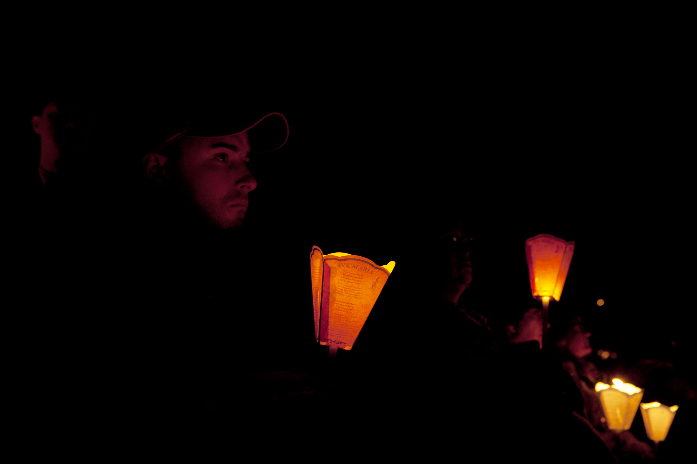
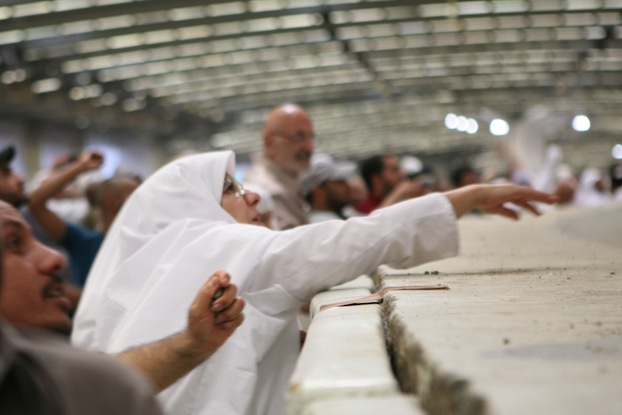
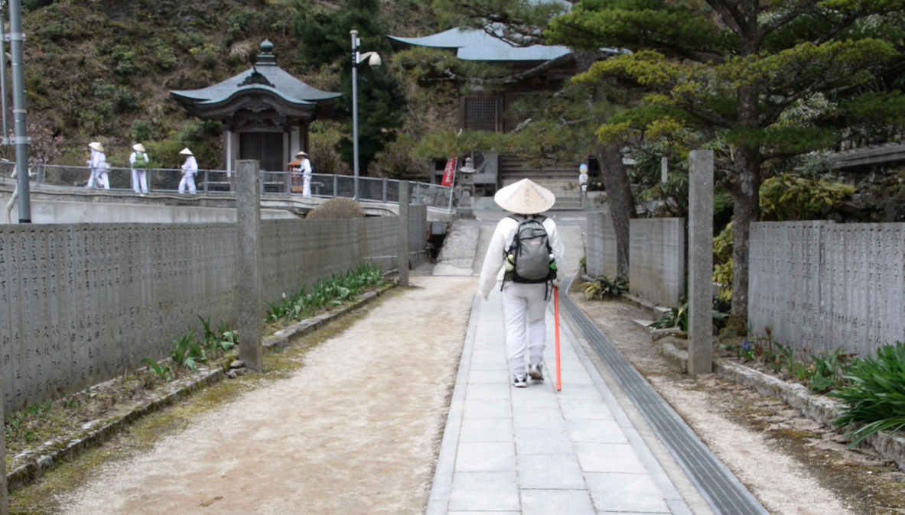
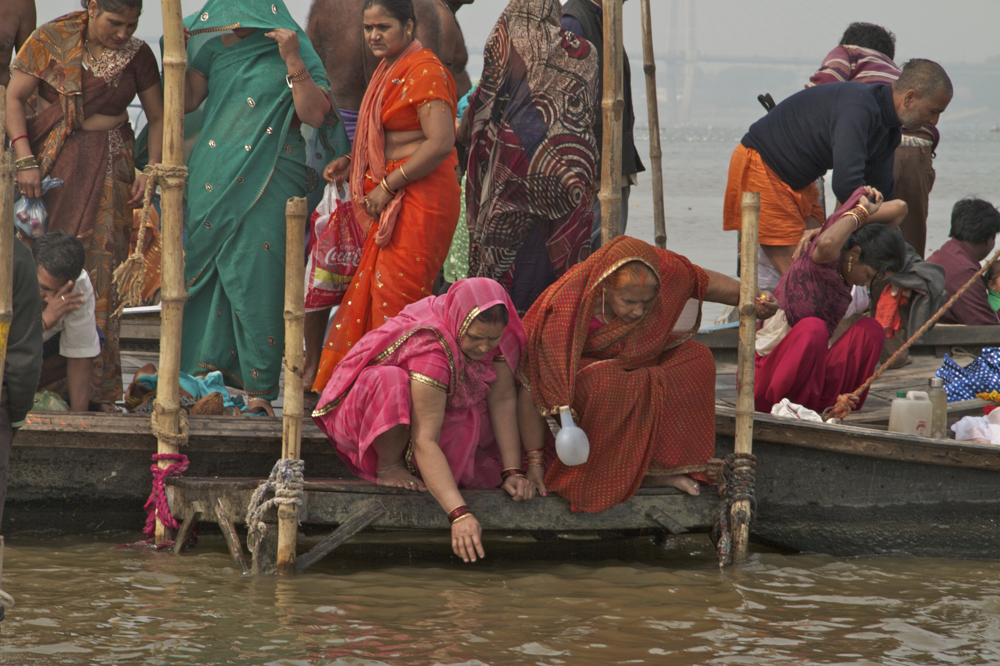

EXPLORE
Lourdes
| December 16, 8/7 PM C
Sacred Journeys with Bruce Feiler is a groundbreaking new series that takes viewers back into ancient history by traveling through sacred landscapes. Hosted by writer/adventurer Bruce Feiler,SacredJourneys joins contemporary religious pilgrims as they explore ancient pilgrimage routes and holy sites that continue to be surprisingly vibrant and relevant today.
EXPLORE
The Hajj | December 16, 9/8 PM C
EXPLORE
Shikoku | December 23, 8/7 PM C
EXPLORE
Kumbh Mela | December 23, 9/8 PM C
EXPLORE

Osun-Osogbo | December 30, 8/7 PM C
EXPLORE

Jerusalem | December 30, 9/8 PM C